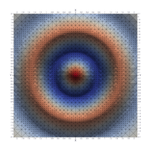
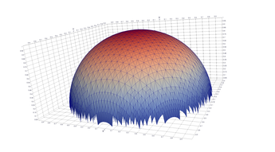

Function Visualization
| Author: | Mitch Richling |
| Updated: | 2024-08-05 15:33:53 |
| Generated: | 2024-08-05 15:34:59 |
Copyright © 2024 Mitch Richling. All rights reserved.
Table of Contents
1. Introduction
Quadtree-like data structures are widely applied today: image processing, spatial indexing, collision detection, terrain modeling, sparse matrix computation, computational field dynamics, mesh generation, and many more. Being a mathematician, my primary interest in these kinds of structures is visualization of mathematical objects – i.e. mesh generation with a few extras. As luck would have it, I think function visualization is a great way to demonstrate how to use this library because everything is self contained and easy to understand.
The goal of this document is to gather together in one place information & results for the example programs distributed with MRPTree. As such, much of this page is auto-generated from the examples themselves – the intro for each example section is pulled directly from the source code's top comment, and the code listing are pulled right out of the repository.
In this document we break the process of mathematical function visualization into three steps:
- Sample
- The goal is to evaluate the function at various sample points so that we can faithfully approximate the geometric structure we are interested in visualizing.
In the examples here, this step is almost entirely accomplished via the
MR_rect_treeclass. When possible we use more samples where the function behaviour is complex and fewer elseware. - Approximate
- In this step we transform our sample data into a finite collection of geometric primitives (a "mesh" or a "cell complex") that may be visualized.
In the examples here, this step is accomplished by the
MR_cell_cplxandMR_rt_to_ccclasses. - Explore
- Finally we use Paraview to display & explore the data.
In some cases we preform post processing or use other tools: VisIT, meshlab, POV-Ray, Blender, ffmpeg, ImageMagick, etc…
2. Core Examples
This group of core examples is intended to illistrate various features of MRPTree.
2.1. Complex Magnitude Surface Plot
One popular way to plot complex functions is to use a surface plot of \(\vert f(z)\vert\) and color the surface with \(\arg(f(z))\). This way we can simultaneously represent the magnitude and phase over the complex plane. There are several ways to color the plots, and we will be following the method described by Richardson in 1991. In this example, we demonstrates several techniques:
- Alternate ways to do an initial sample (grid vs recursive)
- Sample near a point in the domain
- Sample below a level in the range
- Sample near level curves
- Sample based on a data value that is not part of the geometry
- Sample near domain axis
- Directly attach colors to geometric points
- Do rough clipping with high sampling and cell filtering.
Eventually we will also demonstrate:
- Clip with a clipping plane (TBD) – requires new functionality in MR_rt_to_cc.
- Extract level curves (TBD) – requires new functionality in MR_rt_to_cc.
References: Richardson (1991); Visualizing quantum scattering on the CM-2 supercomputer; Computer Physics Communications 63; pp 84-94"
{kind=link}
Source code: https://github.com/richmit/MRPTree/blob/main/examples/complex_magnitude_surface.cpp
#include "MR_rect_tree.hpp" #include "MR_cell_cplx.hpp" #include "MR_rt_to_cc.hpp" typedef mjr::tree15b2d9rT tt_t; typedef mjr::MRccT5 cc_t; typedef mjr::MR_rt_to_cc<tt_t, cc_t> tc_t; tt_t::rrpt_t cpf(tt_t::drpt_t xvec) { std::complex<double> z(xvec[0], xvec[1]); double z_abs, z_arg, f_re, f_im, f_abs, f_arg, red, green, blue; z_abs = std::abs(z); z_arg = std::arg(z); if ( (std::abs(z-1.0) > 1.0e-5) && (std::abs(z+1.0) > 1.0e-5) ) { std::complex<double> f; double f_abs2, f_re_scl, f_im_scl, f_abs2p1, ofs; f = 1.0/(z+1.0) + 1.0/(z-1.0); f_re = std::real(f); f_im = std::imag(f); f_abs = std::abs(f); f_arg = std::arg(f); f_abs2 = f_abs * f_abs; f_re_scl = f_re / std::sqrt(30.0/5.0); f_im_scl = f_im / std::sqrt(2.0); f_abs2p1 = 1 + f_abs2; ofs = (f_abs<1 ? -1.0 : 1.0) * (0.5 - f_abs/f_abs2p1); red = ofs + (0.5 + (std::sqrt(2.0/3.0) * f_re) / f_abs2p1); green = ofs + (0.5 - (f_re_scl - f_im_scl) / f_abs2p1); blue = ofs + (0.5 - (f_re_scl + f_im_scl) / f_abs2p1); } else { f_re = f_im = f_abs = f_arg = red = green = blue = std::numeric_limits<double>::quiet_NaN(); } return {z_abs, z_arg, f_re, f_im, f_abs, f_arg, red, green, blue}; } tt_t::src_t cpfd(tt_t::drpt_t xvec) { int idx_for_z = 4; double cut_for_z = 3.5; auto fv = cpf(xvec); if(std::isnan(fv[idx_for_z])) return 100000.0; else return fv[idx_for_z]-cut_for_z; } int main() { tt_t tree({-2.2, -1.2}, { 2.2, 1.2}); cc_t ccplx; tc_t bridge; // Initial sample // On a uniform grid tree.refine_grid(3, cpf); // Alternately we can use refine_recursive() instead (refine_grid() is faster) // tree.refine_recursive(4, cpf); // Sample near 0+0i because we have a minimum at that piont // The most direct method // tree.refine_leaves_recursive_cell_pred(6, cpf, [&tree](tt_t::diti_t i) { return (tree.cell_close_to_domain_point({0, 0}, 1.0e-2, i)); }); // This function is positive with a universal minimum at 0+0i, so we could just sample where |f| is below 1/4 tree.refine_leaves_recursive_cell_pred(6, cpf, [&tree](tt_t::diti_t i) { return !(tree.cell_above_range_level(i, 4, 0.25, 1.0e-5)); }); // Sample around the poles where we will clip the graph // With nice ranges the singularities will be precicely located on cell vertexes. So we can just refine NaNs. // tree.refine_recursive_if_cell_vertex_is_nan(6, cpf); // Or we can directly sample on the clip level at |f|=3.5. tree.refine_leaves_recursive_cell_pred(7, cpf, [&tree](tt_t::diti_t i) { return (tree.cell_cross_range_level(i, 4, 3.5)); }); // We can do the above with a constructed SDF instead. // tree.refine_leaves_recursive_cell_pred(6, cpf, [&tree](tt_t::diti_t i) { return (tree.cell_cross_sdf(i, cpfd)); }); // Just like the previous, but with atomic refinement. // tree.refine_leaves_atomically_if_cell_pred(6, cpf, [&tree](tt_t::diti_t i) { return (tree.cell_cross_sdf(i, cpfd)); }); // Refine where we plan to draw level curves // The easiest thing is to use cell_cross_range_level() for this. for(auto lev: {0.4, 0.7, 1.1, 1.4, 1.8, 2.6, 3.5}) tree.refine_leaves_recursive_cell_pred(7, cpf, [&tree, lev](tt_t::diti_t i) { return (tree.cell_cross_range_level(i, 4, lev)); }); // We will be coloring based on arg(f), and so want to sample near the abrubpt change near arg(f)=0. // We can do this just like the level curves with |f|, but use arg(f) instead -- i.e. index 5 instead of 4. tree.refine_leaves_recursive_cell_pred(7, cpf, [&tree](tt_t::diti_t i) { return (tree.cell_cross_range_level(i, 5, 0.0)); }); // We can sample near the real & imagaxes axes. // Sample near the real axis tree.refine_leaves_recursive_cell_pred(5, cpf, [&tree](tt_t::diti_t i) { return (tree.cell_cross_domain_level(i, 0, 0.0, 1.0e-6)); }); // Sample near the imaginary axis tree.refine_leaves_recursive_cell_pred(5, cpf, [&tree](tt_t::diti_t i) { return (tree.cell_cross_domain_level(i, 1, 0.0, 1.0e-6)); }); // We don't need to balance the three, but it makes things look nice. // Balance the three to the traditional level of 1 (no cell borders a cell more than half it's size) tree.balance_tree(1, cpf); tree.dump_tree(5); auto tcret = bridge.construct_geometry_fans(ccplx, tree, tree.get_leaf_cells_pred(tree.ccc_get_top_cell(), [&tree](tt_t::diti_t i) { return !(tree.cell_above_range_level(i, 4, 3.5, 1.0e-6)); }), 2, {{tc_t::tree_val_src_t::DOMAIN, 0}, {tc_t::tree_val_src_t::DOMAIN, 1}, {tc_t::tree_val_src_t::RANGE, 4}}); // Note the first argument need not name *every* data element, just the first ones. ccplx.create_named_datasets({"Re(z)", "Im(z)", "abs(z)", "arg(z)", "Re(f(z))", "Im(f(z))", "abs(f(z))", "arg(f(z))"}, {{"COLORS", {8, 9, 10}}}); std::cout << "TC Return: " << tcret << std::endl; ccplx.dump_cplx(5); ccplx.write_legacy_vtk("complex_magnitude_surface.vtk", "complex_magnitude_surface"); ccplx.write_xml_vtk( "complex_magnitude_surface.vtu", "complex_magnitude_surface"); ccplx.write_ply( "complex_magnitude_surface.ply", "complex_magnitude_surface"); }
2.2. Implicit Curve
For many of us our first exposure to an implicit curve was the unit circle in high school algebra, \(x^2+y^2=1\), where we were ask to graph \(y\) with respect to \(x\) only to discover that \(y\) didn't appear to be a function of \(x\) because \(y\) had TWO values for some values of \(x\)! But we soon discovered that a great many interesting curves could be defined this way, and that we could represent them all by thinking of the equations as a functions of two variables and the curves as sets of zeros. That is to say, we can always write an implicit equation in two variables in the form \(F(x,y)=0\), and think of the implicit curve as the set of roots, or zeros, of the function \(F\). We can then generalize this idea to "level sets" as solutions to \(F(x,y)=L\) – i.e. the set of points where the function is equal to some "level" \(L\).
Many visualization tools can extract a "level set" from a mesh. For 2D meshes (surfaces), the level sets are frequently 1D sets (curves). The trick to obtaining high quality results is to make sure the triangulation has a high enough resolution. Of course we could simply sample the 2D grid uniformly with a very fine mesh. A better way is to detect where the curve is, and to sample at higher resolution near the curve.
Currently we demonstrate a couple ways to refine the mesh near the curve:
- Using cell_cross_range_level() to find cells that cross a particular level (zero in this case)
- Using cell_cross_sdf() instead – which generally works just like cell_cross_range_level() with a level of zero.
Today we extract the curve with Paraview, but I hope to extend MR_rt_to_cc to extract level sets in the future:
- Extract "standard" midpoint level sets (TBD)
- Solve for accurate edge/function level intersections, and construct high quality level sets. (TBD)
{kind=link}
{kind=link}
Source code: https://github.com/richmit/MRPTree/blob/main/examples/implicit_curve_2d.cpp
#include "MR_rect_tree.hpp" #include "MR_cell_cplx.hpp" #include "MR_rt_to_cc.hpp" typedef mjr::tree15b2d1rT tt_t; typedef mjr::MRccT5 cc_t; typedef mjr::MR_rt_to_cc<tt_t, cc_t> tc_t; // This function is a classic "difficult case" for implicit curve algorithms. tt_t::rrpt_t f(tt_t::drpt_t xvec) { double x = xvec[0]; double y = xvec[1]; double z = ((2*x*x*y - 2*x*x - 3*x + y*y*y - 33*y + 32) * ((x-2)*(x-2) + y*y + 3))/3000; if (z>1.0) z=1.0; if (z<-1.0) z=-1.0; return z; } int main() { tt_t tree({-10.0, -6.5}, { 10.0, 6.5}); cc_t ccplx; tc_t bridge; // First we sample the top cell. Just one cell! tree.sample_cell(f); // Now we recursively refine cells that seem to cross over the curve tree.refine_leaves_recursive_cell_pred(7, f, [&tree](tt_t::diti_t i) { return (tree.cell_cross_range_level(i, 0, 0.0)); }); // We could have used the function f as an SDF, and achieved the same result with the following: // tree.refine_leaves_recursive_cell_pred(7, f, [&tree](tt_t::diti_t i) { return (tree.cell_cross_sdf(i, f)); }); tree.dump_tree(20); // Convert the geometry into a 3D dataset so we can see the contour on the surface bridge.construct_geometry_fans(ccplx, tree, 2, {{tc_t::tree_val_src_t::DOMAIN, 0}, {tc_t::tree_val_src_t::DOMAIN, 1}, {tc_t::tree_val_src_t::RANGE, 0}}); ccplx.create_named_datasets({"x", "y", "f(x,y)"}); ccplx.write_xml_vtk("implicit_curve_2d.vtu", "implicit_curve_2d"); }
2.3. Implicit Surface
This example is very similar to implicit_curve_2d.cpp; however, instead of extracting a curve from a triangulation of a surface, this time we extract a surface from a quad tessellation of a hexahedron. In addition to what we demonstrate with implicit_curve_2d.cpp, this example also demonstrates:
- How to use an SDF to identify cells that contain the level set
- How to export only a subset of cells
{kind=link}
Source code: https://github.com/richmit/MRPTree/blob/main/examples/implicit_surface.cpp
#include "MR_rect_tree.hpp" #include "MR_cell_cplx.hpp" #include "MR_rt_to_cc.hpp" typedef mjr::tree15b3d1rT tt_t; typedef mjr::MRccT5 cc_t; typedef mjr::MR_rt_to_cc<tt_t, cc_t> tc_t; tt_t::rrpt_t isf(tt_t::drpt_t xvec) { double x = xvec[0]; double y = xvec[1]; double z = xvec[2]; return x*x*y+y*y*x-z*z*z-1; } int main() { tt_t tree({-2.3, -2.3, -2.3}, { 2.3, 2.3, 2.3}); cc_t ccplx; tc_t bridge; /* Initial uniform sample */ tree.refine_grid(4, isf); /* Refine near surface */ tree.refine_leaves_recursive_cell_pred(6, isf, [&tree](tt_t::diti_t i) { return (tree.cell_cross_sdf(i, isf)); }); tree.dump_tree(5); /* Convert our tree to a cell complex. Note that we use an SDF to export only cells that contain our surface */ bridge.construct_geometry_rects(ccplx, tree, tree.get_leaf_cells_pred(tree.ccc_get_top_cell(), [&tree](tt_t::diti_t i) { return (tree.cell_cross_sdf(i, isf)); }), 3, {{tc_t::tree_val_src_t::DOMAIN, 0}, {tc_t::tree_val_src_t::DOMAIN, 1}, {tc_t::tree_val_src_t::DOMAIN, 2}}); /* Name the data points */ ccplx.create_named_datasets({"x", "y", "z", "f(x,y,z)"}); /* Display some data about the cell complex */ ccplx.dump_cplx(5); /* Write out our cell complex */ ccplx.write_xml_vtk("implicit_surface.vtu", "implicit_surface"); }
2.4. 3D Vector Field
This example illustrates how to uniformly sample a vector field. Just for fun we have also produced a solution to the Lorenz system, and directly stored it with a MR_cell_cplx.
{kind=link}
Source code: https://github.com/richmit/MRPTree/blob/main/examples/vector_field_3d.cpp
#include "MR_rect_tree.hpp" #include "MR_cell_cplx.hpp" #include "MR_rt_to_cc.hpp" typedef mjr::tree15b3d3rT tt_t; typedef mjr::MRccT5 cc_t; typedef mjr::MR_rt_to_cc<tt_t, cc_t> tc_t; tt_t::rrpt_t vf(tt_t::drpt_t xvec) { double x = xvec[0]; double y = xvec[1]; double z = xvec[2]; double a = 10.0; double b = 28.0; double c = 8.0/3.0; return { a*y-a*z, x*b-x*z, x*y-c*z }; } int main() { tt_t vftree({-30.0, -30.0, -0.0}, { 30.0, 30.0, 60.0}); cc_t vfccplx; tc_t vfbridge; /* Uniform sampling */ vftree.refine_grid(5, vf); /* Dump the vector field */ vfbridge.construct_geometry_rects(vfccplx, vftree, 0, {{tc_t::tree_val_src_t::DOMAIN, 0}, {tc_t::tree_val_src_t::DOMAIN, 1}, {tc_t::tree_val_src_t::DOMAIN, 2}}); vfccplx.create_named_datasets({"x", "y", "z"}, {{"d", {0, 1, 2}}}); vfccplx.dump_cplx(5); vfccplx.write_xml_vtk("vector_field_3d-f.vtu", "vector_field_3d-f"); /* Now we solve the Lorenz system and directly create a cc_t object */ cc_t cvccplx; int max_steps = 100000; double delta = 0.001; double t = 0; double x_old = 0.1; double y_old = 0.0; double z_old = 0.0; double a = 10.0; double b = 28.0; double c = 8.0 / 3.0; auto p_old = cvccplx.add_point({x_old, y_old, z_old, t}); for(int num_steps=0;num_steps<max_steps;num_steps++) { double x_new = x_old + a*(y_old-x_old)*delta; double y_new = y_old + (x_old*(b-z_old)-y_old)*delta; double z_new = z_old + (x_old*y_old-c*z_old)*delta; t += delta; auto p_new = cvccplx.add_point({x_new, y_new, z_new, t}); cvccplx.add_cell(cc_t::cell_type_t::SEGMENT, {p_old, p_new}); x_old=x_new; y_old=y_new; z_old=z_new; p_old=p_new; } cvccplx.dump_cplx(5); cvccplx.write_xml_vtk("vector_field_3d-c.vtu", "vector_field_3d-c"); }
2.5. Surface Plot With Normals
Surface normals may be used by many visualization tools to render smoother results. In this example we demonstrate:
- How to compute a surface gradient for a function plot
- How to unitize the gradient into a surface normal
- How to add the normal to the sample data stored by a MRPTree
- How to include normals in the cell complex
- How to increase sampling with a SDF function
- How to increase sampling near humps by testing derivatives
- How to balance a tree
- How to dump a cell complex into various file types
Surfaces with and without normals
The mesh without any refinement
The mesh with any refinement (sdf, partial derivative, directional derivative)

Mesh with directional directional refinement but unbalanced)
{kind=link}
{kind=link}
{kind=link}
{kind=link}
{kind=link}
{kind=link}
{kind=link}
Source code: https://github.com/richmit/MRPTree/blob/main/examples/surface_with_normals.cpp
#include "MR_rect_tree.hpp" #include "MR_cell_cplx.hpp" #include "MR_rt_to_cc.hpp" typedef mjr::tree15b2d5rT tt_t; typedef mjr::MRccT5 cc_t; typedef mjr::MR_rt_to_cc<tt_t, cc_t> tc_t; tt_t::rrpt_t damp_cos_wave(tt_t::drpt_t xvec) { double x = xvec[0]; double y = xvec[1]; double d = x*x+y*y; double m = std::exp(-d/4); double s = std::sqrt(d); double z = m*cos(4*s); double dx = -(cos((4 * s)) * s + 4 * sin( (4 * s))) * x * exp(-x * x / 2 - y * y / 2); double dy = -(cos((4 * s)) * s + 4 * sin( (4 * s))) * y * exp(-x * x / 2 - y * y / 2); double dd = -m*(cos(4*s)*s+8*sin(4*s)); if (s>1.0e-5) { dx = dx / s; dy = dy / s; dd = dd / (4 * s); } else { dx = 1; dy = 1; dd = 1; } double nm = std::sqrt(1+dx*dx+dy*dy); return {z, -dx/nm, -dy/nm, 1/nm, dd}; } double circle_sdf(double r, tt_t::drpt_t xvec) { double x = xvec[0]; double y = xvec[1]; double m = x*x+y*y; return (r*r-m); } int main() { tt_t tree({-2.1, -2.1}, { 2.1, 2.1}); cc_t ccplx; tc_t bridge; // Make a few samples on a uniform grid tree.refine_grid(2, damp_cos_wave); // The humps need extra samples. We know where they are, and we could sample on them with an SDF like this: // for(double i: {0, 1, 2, 3}) { // double r = i*std::numbers::pi/4; // tree.refine_leaves_recursive_cell_pred(6, damp_cos_wave, [&tree, r](int i) { return (tree.cell_cross_sdf(i, std::bind_front(circle_sdf, r))); }); // } // Alternately, we can test the derivative values to identify the humps // tree.refine_leaves_recursive_cell_pred(6, damp_cos_wave, [&tree](tt_t::diti_t i) { return tree.cell_cross_range_level(i, 1, 0.0); }); // tree.refine_leaves_recursive_cell_pred(6, damp_cos_wave, [&tree](tt_t::diti_t i) { return tree.cell_cross_range_level(i, 2, 0.0); }); // Lastly we can use the directional derivative radiating from the origin tree.refine_leaves_recursive_cell_pred(6, damp_cos_wave, [&tree](tt_t::diti_t i) { return tree.cell_cross_range_level(i, 4, 0.0); }); // Balance the three to the traditional level of 1 (no cell borders a cell more than half it's size) tree.balance_tree(1, damp_cos_wave); tree.dump_tree(5); bridge.construct_geometry_fans(ccplx, tree, 2, {{tc_t::tree_val_src_t::DOMAIN, 0}, {tc_t::tree_val_src_t::DOMAIN, 1}, {tc_t::tree_val_src_t::RANGE, 0}}); // Note we use the single argument version of create_named_datasets() because we don't want to name elements 3, 4, & 5 (the components of the normal // Note if we had placed the ddiv component right after z, then we could have used the two argument version... ccplx.set_data_name_to_data_idx_lst({{"x", {0}}, {"y", {1}}, {"z=f(x,y)", {2}}, {"ddiv", {6}}, {"NORMALS", {3,4,5}}}); ccplx.dump_cplx(5); ccplx.write_legacy_vtk("surface_with_normals.vtk", "surface_with_normals"); ccplx.write_xml_vtk( "surface_with_normals.vtu", "surface_with_normals"); ccplx.write_ply( "surface_with_normals.ply", "surface_with_normals"); }
2.6. Surface Plot With An Edge
Surface plots are frequently complicated by regions upon which the function singular or undefined. These functions often behave quite poorly on the boundaries of such regions. For this example we consider \(f(x, y)=\sqrt{1-x^2-y^2}\) – the upper half of the unit sphere. Outside the unit circle this function is complex. As we approach the unit circle from the center, the derivative approaches infinity.
Right now this example illustrates two things:
- How to drive up the sample rate near NaNs.
- How to repair triangles containing NaNs.
Typical Jagged Edge vs Healed Edge

Examples From Matlab (Coarse & Fine Mesh)
Examples From Maple (With & Without Adaptive Mesh)

{kind=link}
{kind=link}
{kind=link}
{kind=link}
{kind=link}
Source code: https://github.com/richmit/MRPTree/blob/main/examples/surface_plot_edge.cpp
#include "MR_rect_tree.hpp" #include "MR_cell_cplx.hpp" #include "MR_rt_to_cc.hpp" typedef mjr::tree15b2d1rT tt_t; typedef mjr::MRccT5 cc_t; typedef mjr::MR_rt_to_cc<tt_t, cc_t> tc_t; tt_t::rrpt_t half_sphere(tt_t::drpt_t xvec) { double m = xvec[0] * xvec[0] + xvec[1] * xvec[1]; if (m > 1) { return std::numeric_limits<double>::quiet_NaN(); } else { return std::sqrt(1-m); } } int main() { tt_t tree({-1.1, -1.1}, { 1.1, 1.1}); cc_t ccplx; tc_t bridge; // Sample a uniform grid across the domain tree.refine_grid(5, half_sphere); /* half_sphere produces NaNs outside the unit circle. We can refine cells that cross the unit circle using refine_recursive_if_cell_vertex_is_nan */ tree.refine_recursive_if_cell_vertex_is_nan(7, half_sphere); /* We can acheive the same result via refine_leaves_recursive_cell_pred & cell_vertex_is_nan. */ // tree.refine_leaves_recursive_cell_pred(6, half_sphere, [&tree](int i) { return (tree.cell_vertex_is_nan(i)); }); /* We can acheive similar results by refining on the unit curcle via an SDF -- See surface_plot_corner.cpp */ /* Balance the three to the traditional level of 1 (no cell borders a cell more than half it's size) */ tree.balance_tree(1, half_sphere); tree.dump_tree(10); /* By passing half_sphere() to the construct_geometry_fans() we enable broken edges (an edge with one good point and one NaN) to be repaired. */ bridge.construct_geometry_fans(ccplx, tree, 2, {{tc_t::tree_val_src_t::DOMAIN, 0}, {tc_t::tree_val_src_t::DOMAIN, 1}, {tc_t::tree_val_src_t::RANGE, 0}}, half_sphere ); ccplx.create_named_datasets({"x", "y", "f(x,y)"}, {{"NORMALS", {0, 1, 2}}}); ccplx.dump_cplx(10); ccplx.write_xml_vtk("surface_plot_edge.vtu", "surface_plot_edge"); }
2.7. Surface Branches & Glue
In surface_plot_edge.cpp we encountered the unit sphere defined by the zeros of \(1^2=x^2+y^2+z^2\), and the related function \(f(x,y)=\sqrt{1-x^2-y^2}\) obtained by "solving" for \(z\). Note that if \(z=f(x, y)\), then both \(z\) and \(-z\) satisfy the original equation. While the square root function is positive by definition, we might wish to think of \(f(x, y)\) as a multi-valued function with two branches – a positive one and a negative one.
In simple cases like this, where the two branches are reflections across an axis plane, we can use MR_cell_cplx::mirror() to mirror the geometry and seal up any holes. This is really the only change from surface_plot_edge.cpp.
{kind=link}
#include "MR_rect_tree.hpp" #include "MR_cell_cplx.hpp" #include "MR_rt_to_cc.hpp" typedef mjr::tree15b2d1rT tt_t; typedef mjr::MRccT5 cc_t; typedef mjr::MR_rt_to_cc<tt_t, cc_t> tc_t; tt_t::rrpt_t half_sphere(tt_t::drpt_t xvec) { double m = xvec[0] * xvec[0] + xvec[1] * xvec[1]; if (m > 1) { return std::numeric_limits<double>::quiet_NaN(); } else { return std::sqrt(1-m); } } int main() { tt_t tree({-1.2, -1.2}, { 1.2, 1.2}); cc_t ccplx; tc_t bridge; // Sample a uniform grid across the domain tree.refine_grid(5, half_sphere); /* Refine near the edge */ tree.refine_recursive_if_cell_vertex_is_nan(6, half_sphere); tree.dump_tree(10); /* By passing half_sphere() to the construct_geometry_fans() we enable broken edges (an edge with one good point and one NaN) to be repaired. */ bridge.construct_geometry_fans(ccplx, tree, 2, {{tc_t::tree_val_src_t::DOMAIN, 0}, {tc_t::tree_val_src_t::DOMAIN, 1}, {tc_t::tree_val_src_t::RANGE, 0}}, half_sphere ); ccplx.create_named_datasets({"x", "y", "f(x,y)"}, {{"NORMALS", {0, 1, 2}}}); /* This is the magic. We add new cells with the third element of each point data vector negated. */ ccplx.mirror({0, 0, 1}); ccplx.dump_cplx(10); ccplx.write_xml_vtk("surface_branch_glue.vtu", "surface_branch_glue"); ccplx.write_legacy_vtk("surface_branch_glue.vtk", "surface_branch_glue"); ccplx.write_ply("surface_branch_glue.ply", "surface_branch_glue"); }
2.8. Curve Plot
Univariate function plots are the bread-and-butter of the plotting world. Normally a simple, uniformly spaced, sequence is enough to get the job done quite nicely. Still, a few things can come up:
- Jump discontinuities & Vertical asymptotes: Resolved with higher sampling near the discontinuities and a cutting edge (TBD)
- Isolated, non-differentiable points: Resolved with higher sampling near the points and a folding edge (TBD)
- Undefined intervals: Resolved with higher sampling near the edges and NaN edge repair
- Regions of high oscillation: Resolved with higher sampling on the regions
- Extrema: Resolved with higher sampling near the extrema
Note that most of the items above are listed TBD. A few features need to be added to MR_rt_to_cc. ;) Note the TODO comments in the body of main().
{kind=link}
Source code: https://github.com/richmit/MRPTree/blob/main/examples/curve_plot.cpp
#include "MR_rect_tree.hpp" #include "MR_cell_cplx.hpp" #include "MR_rt_to_cc.hpp" typedef mjr::tree15b1d1rT tt_t; typedef mjr::MRccT5 cc_t; typedef mjr::MR_rt_to_cc<tt_t, cc_t> tc_t; tt_t::rrpt_t f(tt_t::drpt_t x) { double ret = (x<0?-1:1)*std::pow(std::abs(x), 1/3.0) * std::sqrt((x+1.5)*(x+1.5)-1) * (x-2); if (x>2) ret = 2+std::sin(20*x); if (ret < -3) ret = -3; if (ret > 3.2) ret = 3.2; return ret; } int main() { tt_t tree(-3, 3); cc_t ccplx; tc_t bridge; // Sample a uniform grid across the domain tree.refine_grid(5, f); // Refine near NaN tree.refine_recursive_if_cell_vertex_is_nan(10, f); // TODO: Add NaN edge repair when implemented in MR_rt_to_cc // Refine near vertical tangent line tree.refine_leaves_recursive_cell_pred(10, f, [&tree](tt_t::diti_t i) { return (tree.cell_close_to_domain_point(0.0, 1.0e-2, i)); }); // TODO: Use derivative test for this // Step discontinuities at 2. tree.refine_leaves_recursive_cell_pred(10, f, [&tree](tt_t::diti_t i) { return (tree.cell_close_to_domain_point(2.0, 1.0e-2, i)); }); // TODO: Add cell cut when implemented in MR_rt_to_cc // Non differentiable point near x=-2.619185320 tree.refine_leaves_recursive_cell_pred(11, f, [&tree](tt_t::diti_t i) { return (tree.cell_close_to_domain_point(-2.619185320, 1.0e-2, i)); }); // TODO: Add folding edge when implemented in MR_rt_to_cc // High oscillation from [2,3] tree.refine_leaves_recursive_cell_pred(10, f, [&tree](tt_t::diti_t i) { return (tree.diti_to_drpt(i) >= 2.0); }); // Extrema near -0.2171001290 tree.refine_leaves_recursive_cell_pred(10, f, [&tree](tt_t::diti_t i) { return (tree.cell_close_to_domain_point(-0.2171001290, 1.0e-2, i)); }); // TODO: Use derivative test for this // Extrema near 0.8775087009 tree.refine_leaves_recursive_cell_pred(8, f, [&tree](tt_t::diti_t i) { return (tree.cell_close_to_domain_point(0.8775087009, 1.0e-2, i)); }); // TODO: Use derivative test for this tree.dump_tree(10); bridge.construct_geometry_fans(ccplx, tree, 1, {{tc_t::tree_val_src_t::DOMAIN, 0 }, {tc_t::tree_val_src_t::RANGE, 0 }, {tc_t::tree_val_src_t::CONSTANT, 0.0}}, f ); // Note the first argument need not name *every* data element, just the first ones. ccplx.create_named_datasets({"x", "f(x)"}); ccplx.dump_cplx(10); ccplx.write_xml_vtk("curve_plot.vtu", "curve_plot"); }
2.9. Parametric Surface With Defects
This example illustrates some of the things that can go wrong when generating parametric surfaces. We dump two version of the tessellation – one with quads and one with triangles. This allows us to better illustrate how some defects show up.
- Quads that are not plainer. Look closely at the rectangular tessellation, and note the "rectangles" appear to be broken in across the diagonal – at least that's how they appear in most tools including Paraview & meshlab.
- At the poles, the rectangular cells of the tree map to three distinct points instead of four. This means for the rectangular tessellation, the rectangles at the poles are degenerate! Then converting from tree to cell complex, these quads are removed because they are degenerate. This is not an issue for the triangular tessellation (FANS).
- The v=0 edge meets up with the v=1 edge. Because we have uniq_points set to true for the cell complex object, the duplicate points are "welded" together when the points are added. This results in a seamless edge.
{kind=link}
{kind=link}
Source code: https://github.com/richmit/MRPTree/blob/main/examples/parametric_surface_with_defects.cpp
#include "MR_rect_tree.hpp" #include "MR_cell_cplx.hpp" #include "MR_rt_to_cc.hpp" typedef mjr::tree15b2d3rT tt_t; typedef mjr::MRccT5 cc_t; typedef mjr::MR_rt_to_cc<tt_t, cc_t> tc_t; tt_t::rrpt_t par_sphere(tt_t::drpt_t xvec) { double u = std::numbers::pi/4 * xvec[0] + std::numbers::pi/4; double v = std::numbers::pi * xvec[1] + std::numbers::pi; return { std::sin(u)*std::cos(v), std::sin(u)*std::sin(v), std::cos(u) }; } int main() { tt_t tree; cc_t ccplx; tc_t bridge; /* Uniform sampling */ tree.refine_grid(6, par_sphere); /* First we dump a tessellation made of triangles */ bridge.construct_geometry_fans(ccplx, tree, 2, {{tc_t::tree_val_src_t::RANGE, 0}, {tc_t::tree_val_src_t::RANGE, 1}, {tc_t::tree_val_src_t::RANGE, 2}}); ccplx.create_named_datasets({"u", "v", "x(u,v)", "y(u,v)", "z(u,v)"}); ccplx.dump_cplx(5); ccplx.write_xml_vtk("parametric_surface_with_defects-tri.vtu", "parametric_surface_with_defects-tri"); /* Next we dump a tessellation made of rectangles */ ccplx.clear(); // We need to clear out the old contents first! bridge.construct_geometry_rects(ccplx, tree, 2, {{tc_t::tree_val_src_t::RANGE, 0}, {tc_t::tree_val_src_t::RANGE, 1}, {tc_t::tree_val_src_t::RANGE, 2}}); ccplx.create_named_datasets({"u", "v", "x(u,v)", "y(u,v)", "z(u,v)"}); ccplx.dump_cplx(5); ccplx.write_xml_vtk("parametric_surface_with_defects-rect.vtu", "parametric_surface_with_defects-rect"); }
2.10. High Resolution Parametric Surface
Just a nice parametric surface without any weirdness. Some things demonstrated:
- How to time various operations.
- Try with a large mesh (use a 9 in refine_grid).
- Try reducing the number of data variables stored in the cell complex
- Try removing the normal vector from the output
- Try both MRccT5 & MRccF5 for cc_t
- How to include a synthetic value that can be used for color mapping – c(u,v) can be used to render stripes on the surface.
- How to compute a normal to a parametric surface
- How to include a normal in the cell complex
{kind=link}
{kind=link}
{kind=link}
Source code: https://github.com/richmit/MRPTree/blob/main/examples/performance_with_large_surface.cpp
#include <chrono> #include "MR_rect_tree.hpp" #include "MR_cell_cplx.hpp" #include "MR_rt_to_cc.hpp" typedef mjr::tree15b2d15rT tt_t; typedef mjr::MRccT5 cc_t; // Replace with mjr::MRccF5, and compare bridge performance. typedef mjr::MR_rt_to_cc<tt_t, cc_t> tc_t; tt_t::rrpt_t stripy_shell(tt_t::drpt_t xvec) { double u = std::numbers::pi * xvec[0] + std::numbers::pi + 0.1; // U transformed from unit interval double v = std::numbers::pi/2 * xvec[1] + std::numbers::pi/2; // V transformed from unit interval double x = u*std::sin(u)*std::cos(v); // X double y = u*std::cos(u)*std::cos(v); // Y double z = u*std::sin(v); // Z double c = std::fmod(u*sin(v), 2); // Stripes double dxdu = std::sin(u)*std::cos(v)+u*std::cos(u)*std::cos(v); // dX/du double dxdv = -u*std::sin(u)*std::sin(v); // dX/dv double dydu = std::cos(u)*std::cos(v)-u*std::sin(u)*std::cos(v); // dY/du double dydv = -u*std::cos(u)*std::sin(v); // dY/dv double dzdu = std::sin(v); // dZ/du double dzdv = u*std::cos(v); // dZ/dv double nx = dydu*dzdv-dydv*dzdu; // normal_X This noraml double ny = dxdv*dzdu-dxdu*dzdv; // normal_Y will not be of double nz = dxdu*dydv-dxdv*dydu; // normal_Z unit length return {x, y, z, c, dxdu, dxdv, dydu, dydv, dzdu, dzdv, nx, ny, nz}; } int main() { std::chrono::time_point<std::chrono::system_clock> start_time = std::chrono::system_clock::now(); tt_t tree; cc_t ccplx; tc_t bridge; std::chrono::time_point<std::chrono::system_clock> construct_time = std::chrono::system_clock::now(); tree.refine_grid(7, stripy_shell); std::chrono::time_point<std::chrono::system_clock> sample_time = std::chrono::system_clock::now(); tree.dump_tree(20); std::chrono::time_point<std::chrono::system_clock> dump_time = std::chrono::system_clock::now(); bridge.construct_geometry_fans(ccplx, tree, 2, {{tc_t::tree_val_src_t::RANGE, 0}, {tc_t::tree_val_src_t::RANGE, 1}, {tc_t::tree_val_src_t::RANGE, 2}}); std::chrono::time_point<std::chrono::system_clock> fan_time = std::chrono::system_clock::now(); ccplx.create_named_datasets({"u", "v", "x(u,v)", "y(u,v)", "z(u,v)", "c(u,v)", "dx(u,v)/du", "dx(u,v)/dv", "dy(u,v)/du", "dy(u,v)/dv", "dz(u,v)/du", "dz(u,v)/dv", "nx", "ny", "nz"}, {{"NORMALS", {12, 13, 14}}}); std::chrono::time_point<std::chrono::system_clock> dat_anno_time = std::chrono::system_clock::now(); ccplx.write_xml_vtk("performance_with_large_surface.vtu", "performance_with_large_surface"); std::chrono::time_point<std::chrono::system_clock> write_time = std::chrono::system_clock::now(); std::cout << "construct_time time .. " << static_cast<std::chrono::duration<double>>(construct_time-start_time) << " sec" << std::endl; std::cout << "sample_time time ..... " << static_cast<std::chrono::duration<double>>(sample_time-construct_time) << " sec" << std::endl; std::cout << "dump_time time ....... " << static_cast<std::chrono::duration<double>>(dump_time-sample_time) << " sec" << std::endl; std::cout << "bridge time .......... " << static_cast<std::chrono::duration<double>>(fan_time-dump_time) << " sec" << std::endl; std::cout << "dataset anno time .... " << static_cast<std::chrono::duration<double>>(dat_anno_time-fan_time) << " sec" << std::endl; std::cout << "write_vtk time ....... " << static_cast<std::chrono::duration<double>>(write_time-dat_anno_time) << " sec" << std::endl; std::cout << "Total Run _time ...... " << static_cast<std::chrono::duration<double>>(write_time-start_time) << " sec" << std::endl; }
3. Extra Examples
The examples that follow are mostly just interesting mathematical objects. No new MRPTree functionality is demonstrated beyond what is demonstrated in the fore examples.
3.1. Trefoil Parametric Surface
This example doesn't really demonstrate anything not found in the other examples. It's just a neat surface. ;)
Source code: https://github.com/richmit/MRPTree/blob/main/examples/trefoil.cpp
#include "MR_rect_tree.hpp" #include "MR_cell_cplx.hpp" #include "MR_rt_to_cc.hpp" typedef mjr::tree15b2d6rT tt_t; typedef mjr::MRccT5 cc_t; typedef mjr::MR_rt_to_cc<tt_t, cc_t> tc_t; tt_t::rrpt_t trefoil(tt_t::drpt_t xvec) { double u = xvec[0] * std::numbers::pi; double v = xvec[1] * std::numbers::pi; double r = 5; double x = r * std::sin(3 * u) / (2 + std::cos(v)); double y = r * (std::sin(u) + 2 * std::sin(2 * u)) / (2 + std::cos(v + std::numbers::pi * 2 / 3)); double z = r / 2 * (std::cos(u) - 2 * std::cos(2 * u)) * (2 + std::cos(v)) * (2 + std::cos(v + std::numbers::pi * 2 / 3)) / 4; double dxdu = (3*r*std::cos(3*u))/(std::cos(v)+2); double dxdv = (r*std::sin(3*u)*std::sin(v))/(std::cos(v)+2)/(std::cos(v)+2); double dydu = (r*(4*std::cos(2*u)+std::cos(u)))/(std::cos(v+(2*std::numbers::pi)/3)+2); double dydv = (r*(2*std::sin(2*u)+std::sin(u))*std::sin(v+(2*std::numbers::pi)/3))/ ((std::cos(v+(2*std::numbers::pi)/3)+2)*(std::cos(v+(2*std::numbers::pi)/3)+2)); double dzdu = (r*(4*std::sin(2*u)-std::sin(u))*(std::cos(v)+2)*(std::cos(v+(2*std::numbers::pi)/3)+2))/8; double dzdv = (-(r*(std::cos(u)-2*std::cos(2*u))*(std::cos(v)+2)*std::sin(v+(2*std::numbers::pi)/3))/8) - (r*(std::cos(u)-2*std::cos(2*u))*std::sin(v)*(std::cos(v+(2*std::numbers::pi)/3)+2))/8; double nx = dydu*dzdv-dydv*dzdu; double ny = dxdv*dzdu-dxdu*dzdv; double nz = dxdu*dydv-dxdv*dydu; double nm = std::sqrt(nx*nx+ny*ny+nz*nz); nm = (nm > 0 ? nm : 1); nx = nx / nm; ny = ny / nm; nz = nz / nm; return {x, y, z, nx, ny, nz}; } int main() { tt_t tree; cc_t ccplx; tc_t bridge; tree.refine_grid(7, trefoil); tree.dump_tree(20); bridge.construct_geometry_fans(ccplx, tree, 2, {{tc_t::tree_val_src_t::RANGE, 0}, {tc_t::tree_val_src_t::RANGE, 1}, {tc_t::tree_val_src_t::RANGE, 2}}); ccplx.create_named_datasets({"u", "v", "x(u,v)", "y(u,v)", "z(u,v)", "nx", "ny", "nz"}, {{"NORMALS", {5, 6, 7}}}); ccplx.write_xml_vtk("trefoil.vtu", "trefoil"); }
3.2. Twisted Cubic As A Surface Intersection
This program produces an interesting visualization of an object known as the twisted cubic. In parametric form, the curve may be expressed as
\[ f(t)=[t, t^2, t^3] \]
Alternately the curve is also the intersection of two surfaces in \(\mathbb{R}^3\):
\[ y=f_2(x, z)=y^2 \] \[ z=f_3(x, y)=x^3 \]
The "typical" way to graph a surface like \(f_2\) is to transform it into pseudo-parametric form. In Maple that might look like this
plot3d([u, u^2, v], u=-1..1, v=-1..1):
We could do that with MRPTree, but it is easier to simply map the variables when we use construct_geometry_fans().
Another interesting use of MRPTree in this example is the way we have transformed each surface function into an SDF to drive up sample resolution near the surface intersection. This would allow us to use a tool like Paraview to compute an approximation to the the intersection. Just in case the reader is not using a tool that can extract a nice surface intersection, I have also dumped the curve out in a 3rd .VTU file.
#include "MR_rect_tree.hpp" #include "MR_cell_cplx.hpp" #include "MR_rt_to_cc.hpp" typedef mjr::tree15b1d3rT tt1_t; typedef mjr::MRccT5 cc1_t; typedef mjr::MR_rt_to_cc<tt1_t, cc1_t> tc1_t; typedef mjr::tree15b2d1rT tt2_t; typedef mjr::MRccT5 cc2_t; typedef mjr::MR_rt_to_cc<tt2_t, cc2_t> tc2_t; tt1_t::rrpt_t twisted_cubic_crv(tt1_t::drpt_t t) { return { t, t*t, t*t*t }; } tt2_t::rrpt_t twisted_cubic_srf1(tt2_t::drpt_t xzvec) { tt2_t::src_t x = xzvec[0]; return x*x; } tt2_t::src_t twisted_cubic_srf1_sdf(tt2_t::drpt_t xzvec) { tt2_t::src_t z = xzvec[1]; return (twisted_cubic_srf1(xzvec)-z); } tt2_t::rrpt_t twisted_cubic_srf2(tt2_t::drpt_t xyvec) { tt2_t::src_t x = xyvec[0]; return x*x*x; } tt2_t::src_t twisted_cubic_srf2_sdf(tt2_t::drpt_t xyvec) { tt2_t::src_t y = xyvec[1]; return (twisted_cubic_srf2(xyvec)-y); } int main() { tt1_t crv_tree; cc1_t crv_ccplx; tc1_t crv_tree_conv; crv_tree.refine_grid(8, twisted_cubic_crv); crv_tree_conv.construct_geometry_fans(crv_ccplx, crv_tree, 1, {{tc1_t::tree_val_src_t::RANGE, 0}, {tc1_t::tree_val_src_t::RANGE, 1}, {tc1_t::tree_val_src_t::RANGE, 2}}); crv_ccplx.create_named_datasets({"t", "x(t)", "y(t)", "z(t)"}); crv_ccplx.dump_cplx(5); crv_ccplx.write_xml_vtk("parametric_curve_3d-crv.vtu", "parametric_curve_3d-crv"); tt2_t srf1_tree; cc2_t srf1_ccplx; tc2_t srf1_tree_conv; srf1_tree.refine_grid(5, twisted_cubic_srf1); srf1_tree.refine_leaves_recursive_cell_pred(6, twisted_cubic_srf1, [&srf1_tree](tt2_t::diti_t i) { return srf1_tree.cell_cross_sdf(i, twisted_cubic_srf2_sdf); }); srf1_tree.balance_tree(1, twisted_cubic_srf1); srf1_tree_conv.construct_geometry_fans(srf1_ccplx, srf1_tree, 2, {{tc2_t::tree_val_src_t::DOMAIN, 0}, {tc2_t::tree_val_src_t::RANGE, 0}, {tc2_t::tree_val_src_t::DOMAIN, 1}}); srf1_ccplx.create_named_datasets({"u", "v", "x(u,v)", "y(u,v)", "z(u,v)"}); srf1_ccplx.dump_cplx(5); srf1_ccplx.write_xml_vtk("parametric_curve_3d-srf1.vtu", "parametric_curve_3d-srf1"); tt2_t srf2_tree; cc2_t srf2_ccplx; tc2_t srf2_tree_conv; srf2_tree.refine_grid(5, twisted_cubic_srf2); srf2_tree.refine_leaves_recursive_cell_pred(6, twisted_cubic_srf2, [&srf2_tree](tt2_t::diti_t i) { return srf2_tree.cell_cross_sdf(i, twisted_cubic_srf1_sdf); }); srf2_tree.balance_tree(1, twisted_cubic_srf2); srf2_tree_conv.construct_geometry_fans(srf2_ccplx, srf2_tree, 2, {{tc2_t::tree_val_src_t::RANGE, 0}, {tc2_t::tree_val_src_t::RANGE, 1}, {tc2_t::tree_val_src_t::RANGE, 2}}); srf2_ccplx.create_named_datasets({"u", "v", "x(u,v)", "y(u,v)", "z(u,v)"}); srf2_ccplx.dump_cplx(5); srf2_ccplx.write_xml_vtk("parametric_curve_3d-srf2.vtu", "parametric_curve_3d-srf2"); }